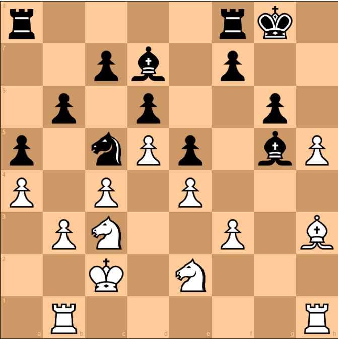

Mobility vs Flexibility in Chess
A note on Graph Chess
This article is part of Graph Chess, an approach to describing and analyzing chess positions using relationships between pieces, pawns, and their possible roles. The ideas introduced here are individual concepts; their full connection and application are developed separately in the Graph Chess method.
In chess, mobility is often associated with the number of squares a piece can move to. A piece with many available moves is generally considered mobile, while a piece with few available moves may be described as restricted.
This creates an interesting question: does having many possible moves necessarily mean that a piece is active?
Not always.
A piece may have several legal moves without making a meaningful contribution to the current position. Another piece may have fewer available moves but perform an important role in the position.
This suggests a distinction between mobility and flexibility.

In the position above, the Black Rook has pinned the White Rook, while the Bishop is in an attacking position. Black therefore has active Rooks, while White has an active Bishop. The White Rook is also overloaded because it has more than one important responsibility.
This illustrates the distinction between mobility and flexibility. Flexibility is not simply about the number of squares a piece can move to. It is about the roles the piece can perform in the current position.
Mobility and activity
Traditional chess often describes pieces in terms such as active, passive, restricted, well placed, or poorly placed. These descriptions are useful, but activity can involve several different kinds of contribution.
A piece may be active because it:
- applies pressure or creates tactical possibilities;
- performs a defensive role;
- gains space while also performing another useful role;
- gains space.
These are different activities, even though all of them contribute to the position.

If we look at the position, the dark squares are the main battleground.
Black has a Queen controlling the long open diagonal. The Knight and White Queen are performing defensive roles, protecting the dark squares around the White King and supporting the Bishop.
The Bishop on c3 is relatively passive. Its main activity is putting pressure on the Knight on f6, but the Knight is defended by two pieces, so this pressure has limited effect.
The Black Rook, meanwhile, is working to open the d-file and invade White’s camp.
Here, we are not counting how many squares each piece can move to. We are looking at the roles the pieces are performing in the position. These roles provide another way of describing the flexibility of the pieces.
In a graph-based description, these activities can be treated as roles of the piece.
The question therefore changes from:
How many squares can the piece move to?
to:
What useful roles can the piece perform from its current position?
Flexibility as a range of roles
The Mobility Graph (MG) describes a piece according to the roles available to it in the current position.
A piece may have one identifiable role, or it may have several. The number of roles provides a simple way of describing its flexibility.
This is different from simply counting legal moves.
For example, a piece might have many legal moves but only one meaningful role. Another piece might have fewer legal moves but be capable of performing several different roles.
Flexibility therefore describes the range of useful activity available to a piece, rather than the number of squares it can reach.
What about an outpost?Traditional chess gives considerable importance to occupying an outpost. An outpost can provide a stable and useful square from which a piece may later influence the position.
Howwever, an outpost itself is not a role.
A piece can occupy an excellent outpost and still have no immediate attacking, defensive, or space-related role. In the Mobility Graph, such a piece can therefore have a flexibility value of zero.
This does not mean that the outpost has no value.
In the position above, the Black Knight is sitting on the c5 outpost. It occupies a good square, but it is not performing any important role in the current position.
The Knight may have useful possibilities in the future, but at this moment it is not creating pressure, defending, or gaining space. A good square, therefore, does not automatically mean an active piece.
In terms of flexibility, we look at the roles a piece is actually performing, rather than simply judging the quality of the square it occupies.
The traditional description and the graph description are simply looking at different aspects of the position.
Traditional chess can regard the outpost as a positional plus. The graph description asks what the piece is actually doing from that square.
If the piece has no current role, occupying the outpost can instead be understood as piece improvement—a useful placement that may create possibilities for future activity.
Two different questions
This gives us two related but different questions:
Mobility:How many movement possibilities does the piece have?
Flexibility:How many useful roles can the piece perform?
The distinction is small in wording but significant in describing a chess position. A piece does not become active merely because it can move to many squares, and occupying a good square does not necessarily mean that the piece is currently performing an active role.
The Mobility Graph uses the roles available to a piece to describe this aspect of its position.
About
Hidden Graphs of Chess is a new graph based method to understanding and playing chess using graph-based thinking.